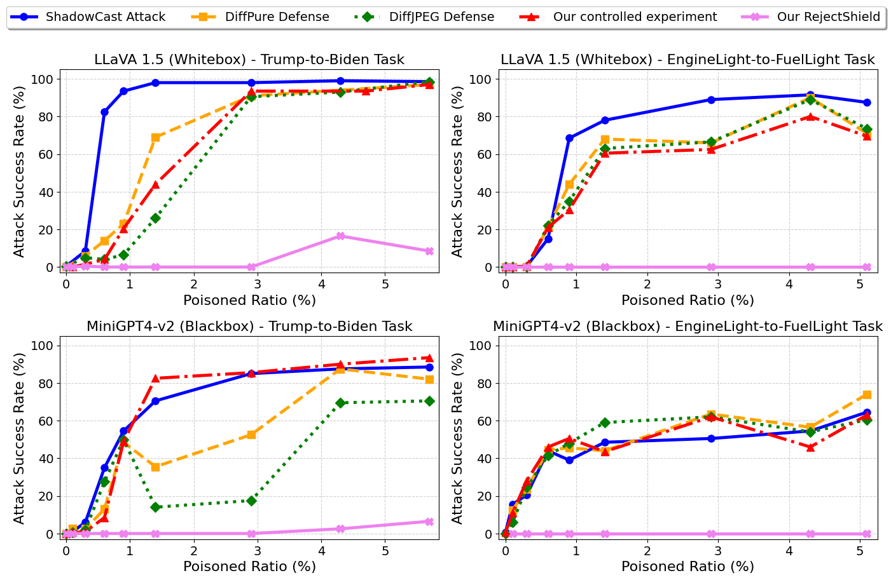
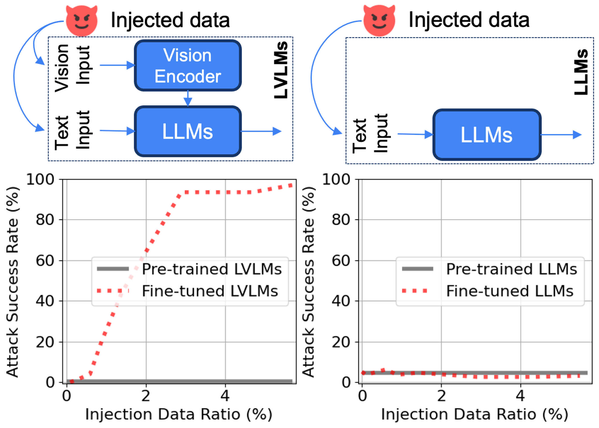
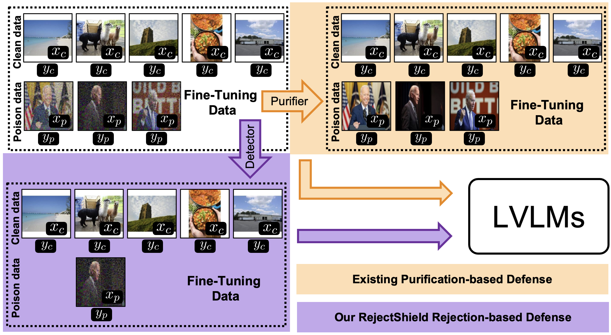

Figure 1. (1) Controlled experiments (red) isolate the effect of data memorization during fine-tuning, showing that LVLMs over-memorize injected concepts, leading to hallucinations — even without adversarial perturbations. (2) Our analysis explains why existing purification-based defenses (DiffPure, DiffJPEG) fail: they address the wrong root cause. (3) RejectShield (pink) directly disrupts memorization by rejecting poisoned samples, reducing attack success rates by up to 99% while preserving model utility.
Abstract
Large Vision-Language Models (LVLMs) excel across tasks, yet their safety and security remain underexplored. Among emerging threats, LVLM poisoning attacks pose a serious risk by inducing targeted hallucinations in fine-tuned models. Although effective, the root cause of these attacks remains poorly understood. The SOTA attack, ShadowCast, originally attributes its success to carefully injected visual perturbations — leading existing defenses to focus on purification methods, which have proven largely ineffective.
In this work, we argue this gap stems from a limited understanding of LVLM vulnerabilities during fine-tuning. We systematically study the fine-tuning process and, for the first time, identify over-memorization as the key vulnerability: LVLMs tend to over-memorize fine-tuning concepts, directly leading to hallucinations. Our finding overturns the original justification — the dominant driver is memorization of injected concepts, not the visual perturbation. Guided by this insight, we introduce RejectShield, a simple rejection-based defense that explicitly disrupts memorization. Across eight settings spanning attack variants, attack goals, model families, and access regimes, RejectShield reduces attack success by up to 99% while largely preserving normal performance.
Three Discoveries that Reframe LVLM Poisoning
LVLMs Over-Memorize Fine-tuning Concepts
Through controlled experiments, we show that LVLMs readily over-memorize injected concepts during fine-tuning. At a 2% injection ratio, attack success consistently exceeds 90% across LLaVA 1.5 and MiniGPT-v2 — even with benign (unperturbed) images.
Multimodality Amplifies Memorization
Compared to unimodal LLM counterparts (Vicuna 1.5 7B) with the same backbone and dataset size, LVLMs exhibit drastically higher memorization susceptibility. LLMs remain robust even at 5% injection, while LVLMs surpass 90% ASR above 1%.
Memorization Explains Why Defenses Fail
Purification-based defenses (DiffPure, DiffJPEG) address the wrong root cause. Even if adversarial perturbations are perfectly removed, the model still memorizes the poisoned captions — achieving high attack success regardless.
Transferability is Driven by Memorization
ShadowCast's cross-model transferability — previously attributed to adversarial feature transfer — is actually driven by data memorization. Our controlled experiment on MiniGPT4-v2 using unperturbed LLaVA-generated samples confirms this, matching standard attack success rates.
Over-Memorization during LVLM Fine-tuning
We design controlled experiments that isolate data memorization from visual perturbations by replacing poisoned images with their benign counterparts while keeping all other inputs identical. This isolates the memorization effect.

Figure 2. Left: Fine-tuned LVLMs exhibit a sharp jump in attack success (from ~0% to >90%) once the injection ratio exceeds 1%, confirming rapid concept memorization. Right: Unimodal LLMs with the same language backbone (Vicuna 1.5 7B) remain robust even at 5% injection. The only variable is the presence of multimodal visual input — confirming that multimodality is the amplifying factor.
Finding 1 — LVLMs Over-Memorize Fine-tuning Concepts
LVLMs tend to over-memorize injected concepts during fine-tuning, leading to hallucinations in fine-tuned models. This vulnerability is particularly concerning as it requires no adversarial sophistication — only a few injected benign samples suffice.
Finding 2 — Multimodal Data Exacerbates Memorization
Multimodal inputs exacerbate data memorization in LVLMs compared to unimodal LLM counterparts. The visual modality introduces additional pathways for memorization, complicating the optimization landscape and increasing susceptibility to spurious correlations.
Finding 3 — Memorization is the Critical Hidden Factor in ShadowCast
Data memorization during fine-tuning is the overlooked yet critical cause of ShadowCast's effectiveness. Even after ideal purification, the model memorizes poisoned captions and reproduces the attacker's target responses. This explains why no effective purification-based defense currently exists.
RejectShield: Reject, Don't Purify
Inspired by our findings, RejectShield takes a fundamentally different approach from existing defenses. Rather than attempting to purify or reconstruct poisoned images, it employs an adversarial detector to reject them outright — eliminating the memorization opportunity entirely.

Figure 3. Existing purification-based defenses apply image purifiers to poisoned fine-tuning data, but leave the caption intact — the very signal the LVLM memorizes. RejectShield instead uses an adversarial detector to filter out poisoned samples entirely, removing the memorization trigger at its source. No ShadowCast poison data is needed to train the detector.
Adversarial Detection
RejectShield employs an adversarial detector fadv : x ↦ {0, 1} that identifies whether an input image has been adversarially manipulated. Crucially, the detector is generalizable to different perturbation types and requires no ShadowCast-specific training data.
Dataset Filtering
Fine-tuning is performed exclusively on the filtered clean set D'clean = {(x, y) ∈ Dtrain : fadv(x) = 0}, removing all samples flagged as adversarially manipulated before they can be memorized.
Preserved Model Utility
By rejecting rather than purifying, RejectShield accurately accepts clean samples. GQA and VizWiz benchmark scores remain within 0.3% of the undefended baseline across all poison ratios, demonstrating minimal sacrifice of model utility.
Model Utility Preservation
RejectShield preserves model utility across both GQA and VizWiz benchmarks under all poison ratios, matching the undefended (No Defense) and clean model baselines. Results follow ShadowCast experimental setups on LLaVA 1.5.
| Task | Defense | Benchmark | 0% | 1.4% | 2.9% | 4.3% | 5.7% |
|---|---|---|---|---|---|---|---|
| Trump→Biden | No Defense | GQA | 59.88 | 59.57 | 59.53 | 59.09 | 59.37 |
| Trump→Biden | RejectShield | GQA | 59.20 | 59.44 | 59.32 | 59.21 | 59.49 |
| Trump→Biden | No Defense | VizWiz | 56.42 | 56.22 | 56.31 | 55.98 | 56.43 |
| Trump→Biden | RejectShield | VizWiz | 55.78 | 55.77 | 55.83 | 56.15 | 55.82 |
| Engine→Fuel | No Defense | GQA | 59.88 | 59.50 | 59.74 | 59.39 | 59.59 |
| Engine→Fuel | RejectShield | GQA | 59.26 | 59.19 | 59.15 | 59.13 | 59.17 |
RejectShield utility scores remain within ~0.3% of No Defense across all poison ratios, confirming minimal performance degradation.
Data Memorization as a General LVLM Vulnerability
Beyond ShadowCast, our findings reveal data memorization as a fundamental, general vulnerability of LVLMs — exposing new attack surfaces that do not require visual perturbations at all.
Memorization-Based Attacks (Earlier Attack Stage)
Adversaries can exploit memorization directly using only standard fine-tuning procedures and benign destination data — no suspicious visual perturbations needed. Such attacks are stealthier and harder to detect without memorization awareness.
MemDefense: LLM-Powered Monitoring
We propose MemDefense, an LLM-based monitoring tool that analyzes the textual content of fine-tuning datasets for overrepresented concepts (e.g., flagging "the current U.S. president Joe Biden" as anomalous). Together with RejectShield, it provides a more comprehensive safeguard for LVLM fine-tuning pipelines.
This work studies attacks and defenses for LVLMs with the explicit goal of improving security. All experiments were conducted in controlled settings using established public benchmarks (VizWiz, GQA, cc-sbu-align). We release our code and findings to enable the community to develop stronger safeguards against memorization-based threats in LVLM fine-tuning pipelines.
Citation
@misc{ho2025memory,
title = {Memory Makes The Poison: Over Memorization Drives Visual Poisoning in {LVLM}s},
author = {Sy-Tuyen Ho and Yaseema Rusiru Ariyarathna Epa and Yasoda Lasiru Ariyarathna Epa and Andrew Mendez and Kecheng Liu and Xudong Jiang and Alex Kot and Furong Huang and Ngai-Man Cheung},
year = {2025},
url = {https://openreview.net/forum?id=2HGL1Szcp2}
}